Visualisation Gallery
Source:vignettes/phenoscapR-04-visualisation.Rmd
phenoscapR-04-visualisation.Rmd


Overview
Every phenoscapR plotting function returns a ggplot object, so you can add themes, facets, or annotations as usual, and they all draw from the global palette system for consistent colours across a figure panel. This gallery shows each one on the bundled example data.
library(phenoscapR)
library(ggplot2)
data(phenoscapR_example)
obj <- phenoscapR_example
obj@meta_data$phenotype <- obj@meta_data$phenotype_true
obj <- NormaliseData(obj, method = "zscore")
obj <- CellDensity(obj, radius = 40)
# A single tissue for the spatial maps.
a <- obj[obj$sample_id == "tonsil_A", ]
markers <- c("CD20", "CD3", "CD8", "PanCK")Tissue maps
SpatialNetworkPlot() — cell-contact graph
a_net <- DelaunayNetwork(a, max_edge = 60)
SpatialNetworkPlot(a_net)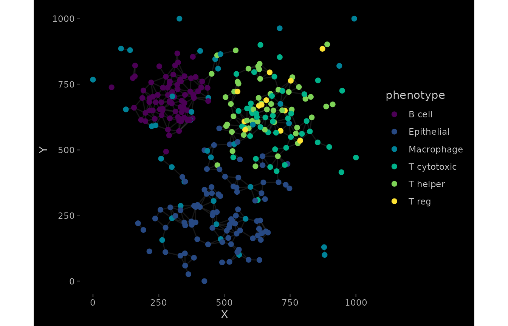
Marker distributions
ViolinPlot() and BoxPlot()
ViolinPlot(a, features = markers, group_by = "phenotype")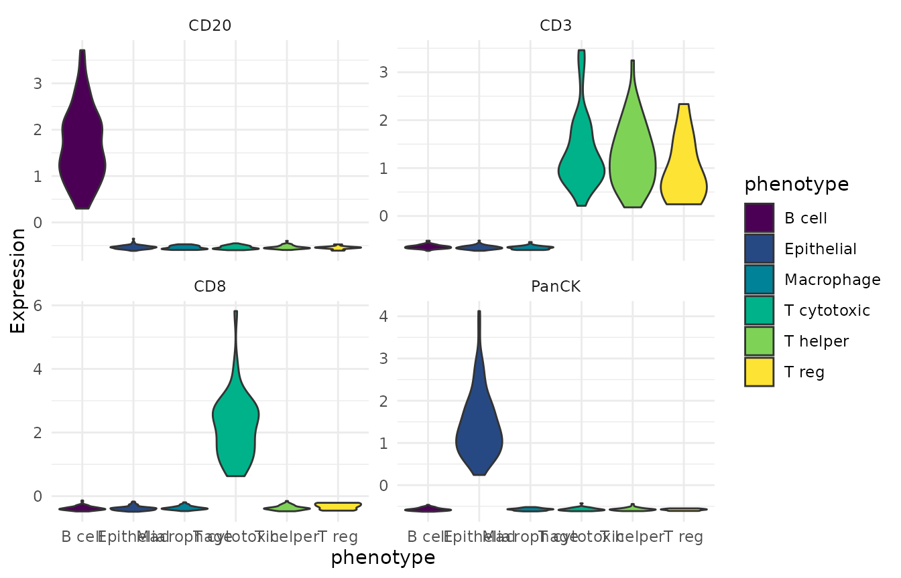
BoxPlot(a, features = markers, group_by = "phenotype")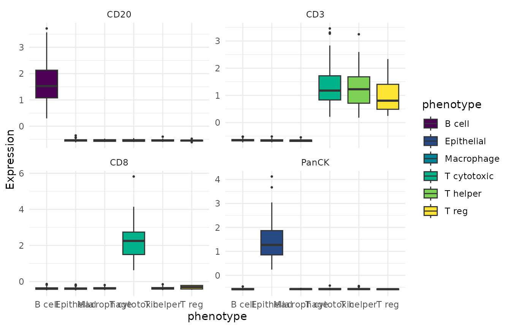
RidgePlot() and HistogramPlot()
RidgePlot(a, features = markers, group_by = "phenotype")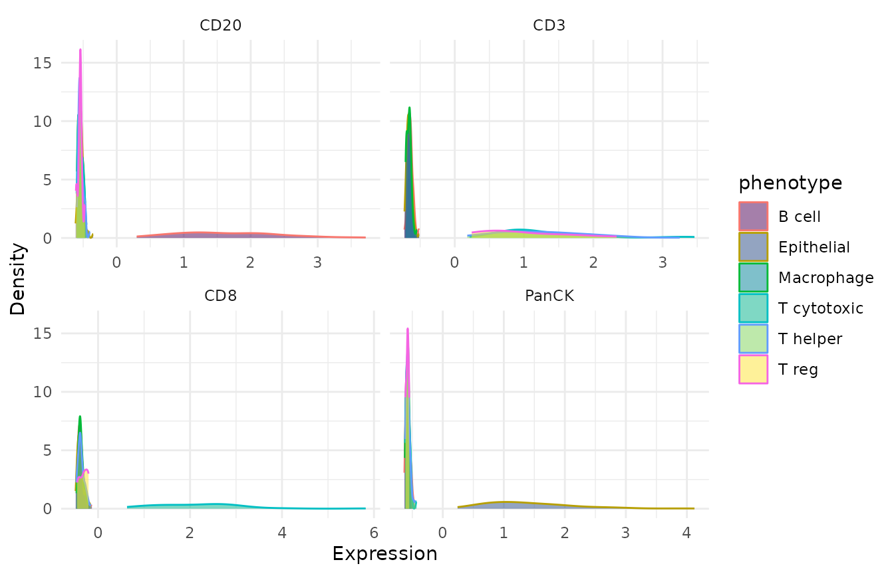
HistogramPlot(a, feature = "CD20", group_by = "phenotype")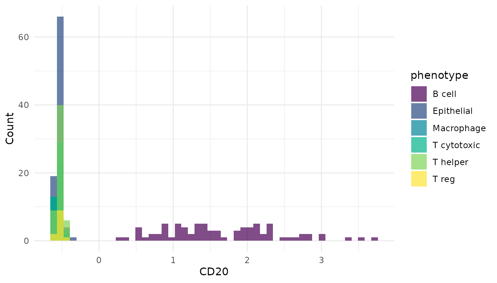
Summaries
CompositionPlot() — phenotype proportions
CompositionPlot(obj, group_by = "sample_id")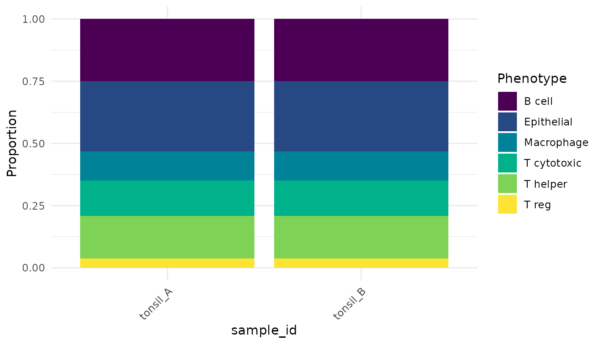
InteractionPlot() — co-localisation scores
InteractionPlot(InteractionMatrix(obj, radius = 40))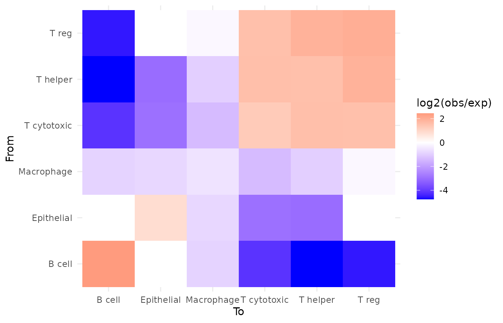
QCPlot() — any metadata pair
QCPlot(a, x = "cell_area", y = "density", colour_by = "phenotype")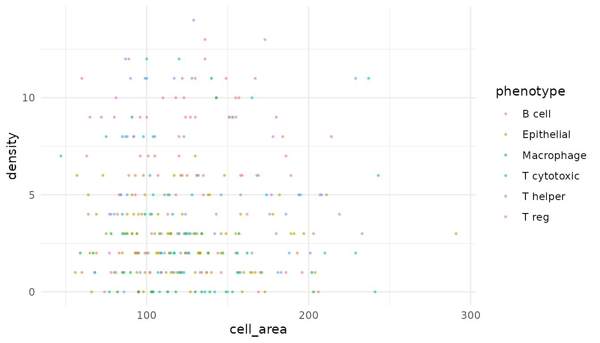
Dimensionality reductions
Reduce marker space and plot it with DimPlot() /
EmbeddingPlot().
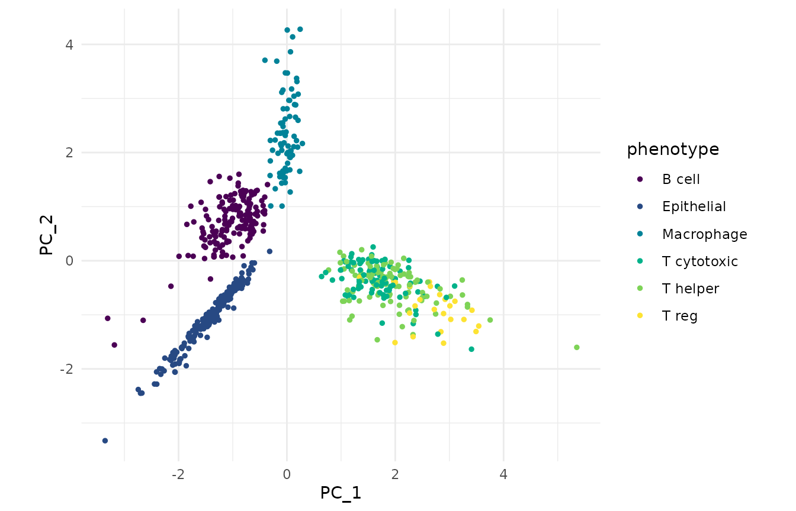
obj <- RunUMAP(obj, dims = 10, n_neighbors = 15)
EmbeddingPlot(obj, reduction = "umap", colour_by = "phenotype")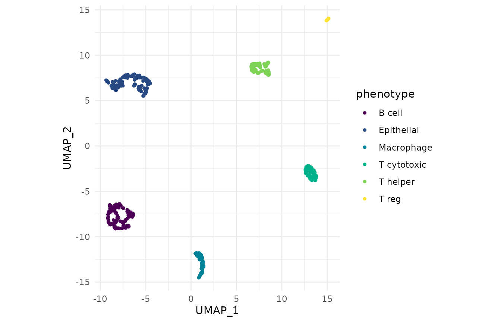
Theming and palettes
Because each plot is a plain ggplot, standard customisation just works:
CellMap(a) +
labs(title = "Tonsil A — phenotype map") +
theme(plot.title = element_text(face = "bold"))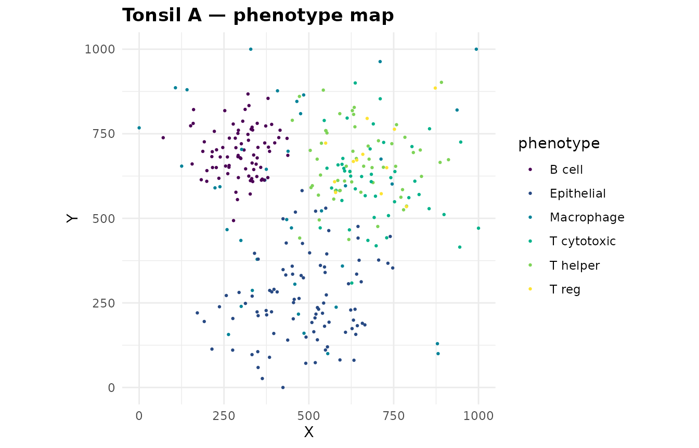
The package palette is global. Set it once and every plot follows.
Any viridis-family option works ("viridis",
"inferno", "plasma", "cividis",
"rocket", "mako"):
SetPalette("rocket")
CompositionPlot(obj, group_by = "sample_id")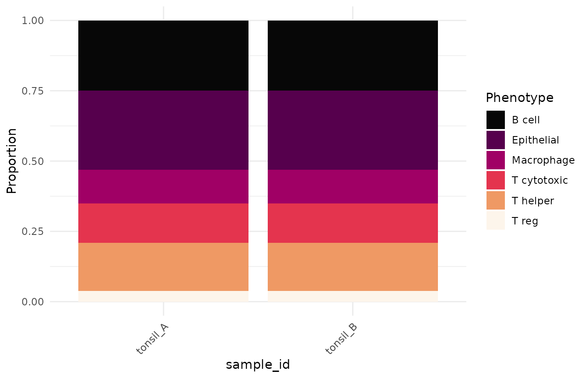
PaletteDiscrete(), PaletteContinuous(), and
CustomGradient() expose the same colours for use in bespoke
plots.
PaletteDiscrete(5)
#> [1] "#4B0055" "#00588B" "#009B95" "#53CC67" "#FDE333"See also
- Getting Started — the end-to-end workflow
- Advanced Spatial Analysis — the statistics behind these plots